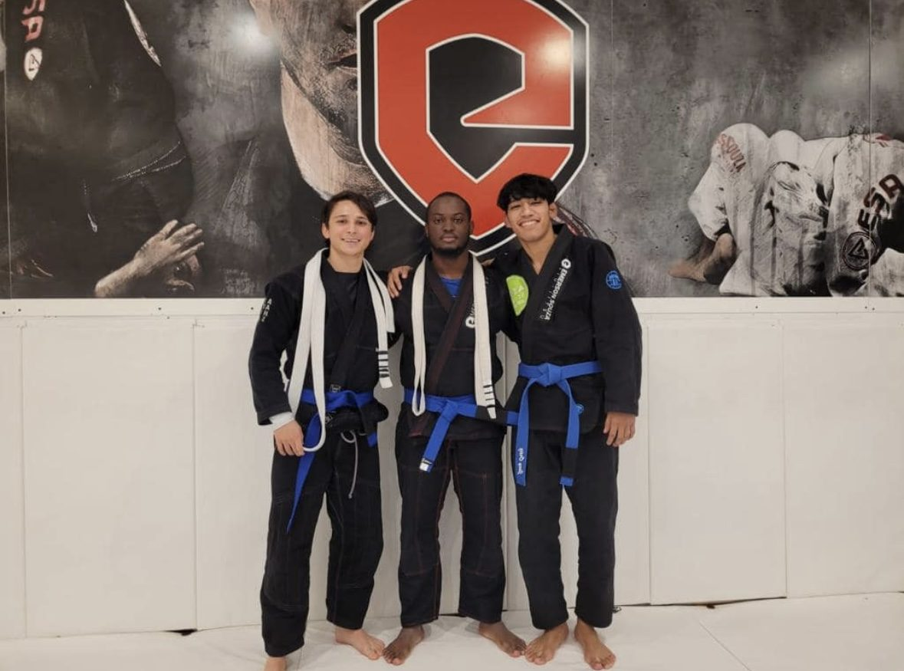
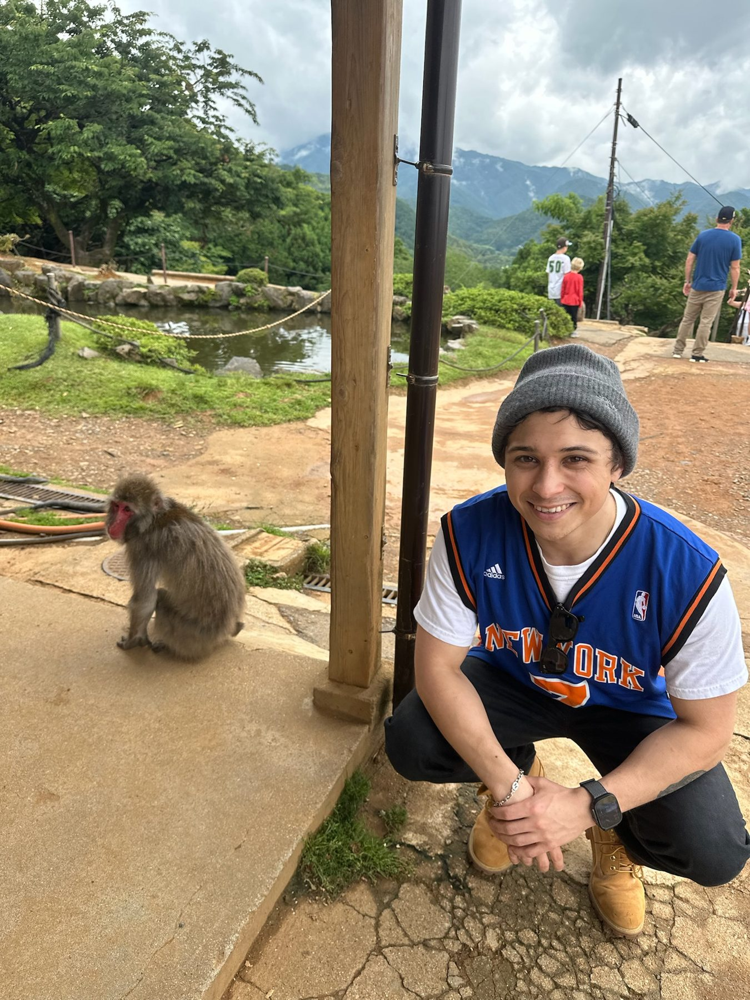
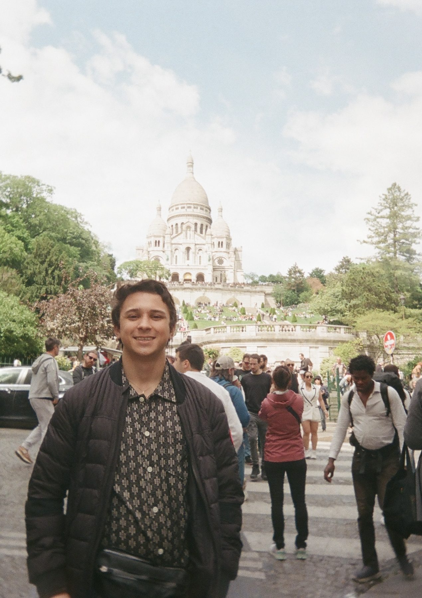

Projects
Check out my work.
Research and design projects from neural decoding to RF. Click any project for the full write-up.
Neural Decoding|Analog & Embedded Hardware|Real-Time Systems
M.S. student in Electrical Engineering at Columbia, building brain-computer interfaces end to end: circuits that capture microvolt signals, firmware that streams them, and decoders that turn them into movement in under 35 ms.
About
I'm an M.S. Electrical Engineering student at Columbia University focused on brain-computer interfaces. My work runs from the electrode to the edge. I build low-noise biosignal front ends, design causal neural decoders, and deploy them on embedded hardware with verified real-time latency. I also bring experience from medical devices, where I ran V&V and 510(k) testing on Class II surgical systems.
I'm looking for roles in BCI engineering, neural interface hardware, neuromodulation, and medical device R&D. The best way to reach me is email.
These are the skills I use most across research, hardware, and industry work.
Projects
Research and design projects from neural decoding to RF. Click any project for the full write-up.
Experience
Research, industry, and education. Each role links to a longer page.
Apr 2026 – Present
Lead Student Researcher
I run an independent first-author study on causal, quantized ECoG decoding deployed to embedded hardware. The manuscript is in preparation for IEEE EMBC / NER.
Read more →Jan – May 2026
Research Assistant, Rehabilitation Robotics
I built the GUI and control system for a stroke-rehabilitation exoskeleton, with finger actuation accurate to within 1°.
Read more →May – Aug 2026
Asset Management Intern
I built a SQL-based asset tracking system and a statistical risk score that ranks distribution assets for inspection and replacement.
Read more →May – Aug 2025
Distribution Design Intern
I designed overhead and underground distribution circuits and delivered field-ready construction packages for Oncor projects.
Read more →2020 – 2022
R&D / Product Development Engineering Intern
I ran V&V and 510(k) testing on Class II ultrasonic surgical devices, engineered a BoneScalpel tube set, and wrote the company's first sterile-field IFU.
Read more →Aug 2026 – Dec 2027 (expected)
M.S. Electrical Engineering, focused on neuroengineering
Coursework: Computational Neuroscience, Digital Signal Processing, Analog Electronic Circuits, Deep Learning for Biomedical Signal Processing.
Aug 2024 – Aug 2026
B.S. Electrical Engineering · Dean's List
I took graduate coursework in Robotics and Cyber-Physical Systems, plus MEMS, Antennas, Control Systems, and Embedded Control.
Beyond the Lab

On the mats most weeks. It's problem solving under pressure, with instant feedback.

From the Swiss Alps to Japan's snow monkeys, I love seeing how other places live and build.

Neuroscience, history, and a good film. I also cook when I have time.
Contact
Whether it's a role, a research collaboration, or a question about my work, reach out.
New York, NY